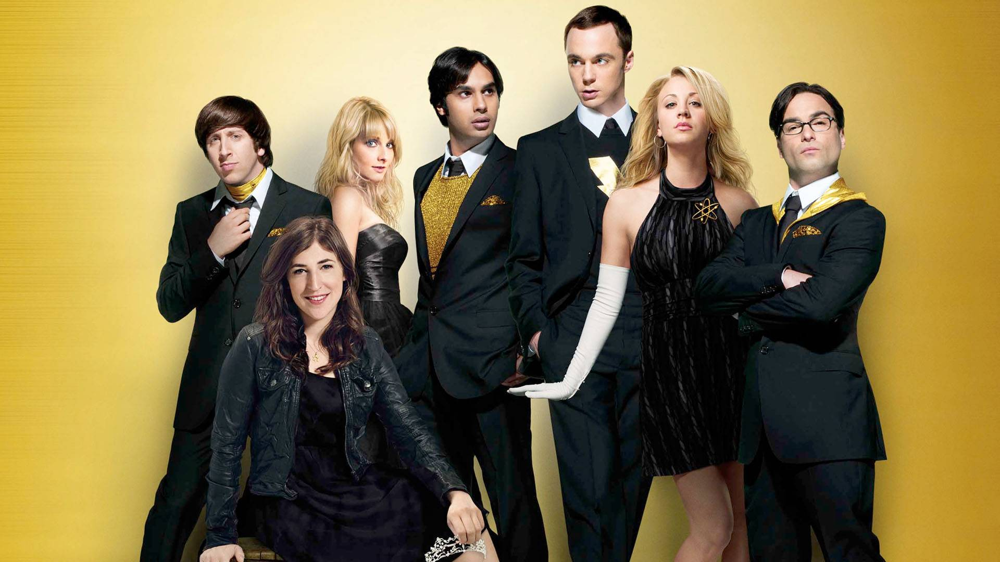

The Big Bang Theory
The Big Bang Theory is an American television sitcom created by Chuck Lorre and Bill Prady,
both of whom served as executive producers on the series, along with Steven Molaro, all of whome also
served as head writers. It premiered on CBS on September 24, 2007, and concluded on May 16, 2019, having
broadcast 279 episodes over 12 seasons.
The show originally centered on five characters living in Pasadena,
California: Leonard Hofstadter (Johnny Galecki) and Sheldon Cooper (Jim Parsons), both physicists at Caltech, who
share an apartment; Penny (Kaley Cuoco), a waitress and aspiring actress who lives across the hall; and Leonard
and Sheldon's similiarly geeky and socially awkward friends and coworkers, aerospace engineer Howard Wolowitz (Simon Helberg)
and astrophysicist Raj Koothrappali (Kunal Nayyar). Over time, supporting characters were promoted to starring roles, including
neuroscientist Amy Farrah Fowler (Mayim Bialik), microbiologist Bernadette Rostenkowski (Melissa Rauch), and comic book store owner
Stuart Bloom (Kevin Sussman).
The show was filmed in front of a live audience and produced by Chuck Lorre Productions and Warner Bros. Television.
It received mixed reviews throughout its first season, but reception was more favorable in the second and third seasons.
Despite early mixed reviews, seven seasons were ranked within the top ten of the final season ratings, and it ultimately
reached the no. 1 spot in its eleventh season. It was nominated for the Emmy Award for Outstanding Comedy Series from 2011
to 2014 and won the Emmy Award for Outstanding Lead Actor in a Comedy Series four times for Parsons. In total, it won seven
Emmy Awards from 46 nominations. Parsons also won the Golden Globe for Best Actor in a Television Comedy Series in 2011. In 2017,
the series spawned a prequel series, Young Sheldon, based on Parsons' character Sheldon Cooper; it also airs on CBS.
Source: Wikipedia